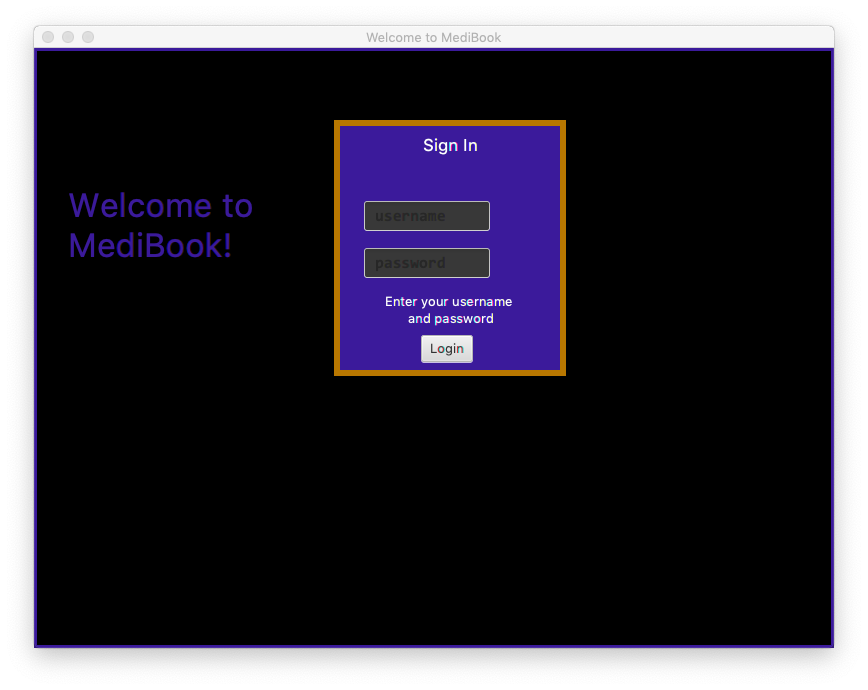

About Me
I am currently an undergraduate of National University of Singapore. I am in year 2 of the Computer Engineering course and am expecting to graduate in mid-2021.
Why?
AddressBook - Level 3 is a desktop address book application used for teaching Software Engineering principles in NUS under the module CS2113/T. Students are expected to work with the application to create a solution to a current real-world problem. After countless hours spent on ideation, my team and I singled out healthcare as a prominent issue that needs to be addressed.
MediBook is the result of me and my team’s efforts on AddressBook.
Overview
MediBook is a form of a centralised database to store all patient and staff information within a hospital. MediBook reduces inefficientices in the current healthcare system and can work as a desktop and mobile application. The user interacts with it using a CLI, and it has a GUI created with JavaFX. It is written in Java, and has about 5 kLoC.
Summary of contributions
-
Major enhancement 1: added the login feature for access to MediBook by individual account
-
What it does: allows the user to log in to his own account on MediBook.
-
Justification: As the medical information of patients are highly sensitive and private, only staff members should have access. This personalised individual access is enabled with logins and accounts.
-
Highlights: After careful consideration, this enhancement is implemented as a standalone plugin; it does not affect the code of MediBook thus allowing for changes to the login system to be made with ease. The security features behind the login system is in line with industry standards and took a huge effort to implement.
-
Credits: {mention here if you reused any code/ideas from elsewhere or if a third-party library is heavily used in the feature so that a reader can make a more accurate judgement of how much effort went into the feature}
-
-
Major enhancement 2: added authorisation and access levels
-
What it does: allows for hierarchical viewing of sensitive information and data.
-
Justification: Even amongst doctors in the same institution, patient data should not be shared so loosely. Authorisation and access levels enables only the patient’s direct doctor to be privy to his information, maintaining confidentiality of a patients data.
-
Highlights: [this feature is still in the works]
-
-
Minor enhancement: worked with editing text files and hashing passwords to store the login credentials of every account secure
-
Code contributed: [Functional code] [Test code] {give links to collated code files}
-
Other contributions:
-
Project management:
-
Managed releases
v1.1-v1.4(4 releases) on GitHub
-
-
Enhancements to existing features:
-
added NRIC field to Person class to be used as Username for Login feature and to maintain uniqueness of users
-
Wrote additional tests for existing features to increase coverage from 0% to 4.7%
-
-
Documentation:
-
Did cosmetic tweaks to existing contents of the User Guide: #14
-
-
Community:
-
PRs reviewed (with non-trivial review comments):
-
Contributed to forum discussions
-
Tested and reported bugs and suggestions for other teams in the class
-
Some parts of the history feature I added was adopted by several other class mates
-
-
Contributions to the User Guide
Given below are sections I contributed to the User Guide. They showcase my ability to write documentation targeting end-users. |
3 Starting MediBook
-
Download the latest version of MediBook from our team’s GitHub repository here.
-
Double click the jar file to start it.
-
The login GUI should appear in a few seconds
 -
Enter "Username" in the username field and "Password" in the password field according to the prompts to log in as Administrator
-
If incorrect username and password is entered, both fields will be cleared and you can try logging in again. Program will exit upon login failure, i.e. 3 incorrect username/password tries
-
Upon successful login, main GUI
Welcome to your MediBook!will appear. -
Current Username and Access level will be displayed at bottom of main GUI

-
You may then use list as
Two .txt files (addressbook.txt and loginstorage.txt) with preloaded data will be created in the same directory as the .jar file. Preloaded doctor accounts uses the Person’s NRIC as both username and password.
If you wish to start Medibook from scratch, delete the CONTENTS of BOTH these files and login as Administrator
4.14 Change Password: changepassword
Changes the password of the current logged-in-user. Format: changepassword pw/CURRENTPASSWORD npw/NEWPASSWORD cpw/CONFIRMNEWPASSWORD
|
CURRENTPASSWORD must be the current password of the logged-in-user NEWPASSWORD and CONFIRMNEWPASSWORD must be exactly the same. |
Examples:
-
changepassword pw/0ldPassword! npw/N3wPassword! cpw/N3wPassword!
4.19 Access levels
Certain data fields of a person will require a certain access level to view the information. If the User does not have the required access level, the field will be displayed as "*** HIDDEN ***" instead. Address field is such a data type. A smaller number indicate a higher access level with level 0 being the highest level.
Examples:
-
list
viewall 1
Views all details of the 1st person in MediBook. DISPLAYED:
Viewing person: John Doe NRIC: S1233210Y Phone: 81654610 Email: 10@gmail Address: *** HIDDEN *** Title: Doctor Schedule: Tags:
Contributions to the Developer Guide
Given below are sections I contributed to the Developer Guide. They showcase my ability to write technical documentation and the technical depth of my contributions to the project. |
4.2 Login System and Access Level
Securely logs user on to MediBook with a preassigned access level.
4.2.1 Current Implementation
Login is implemented as a User Interface(UI) before the main Graphic UI(GUI) launches. The login UI and main GUI are two different scenes. Upon the launch of MediBook, the scene is set to the login UI and MediBook prompts for two input from the User, username and password. MediBook then compares the given pair of inputs with the data in the file loginstorage.txt. On successful login, the scene will switch from login UI to the main GUI scene.
Similar to the main GUI, login UI uses JavaFX with the file, signin.fxml, and its controller class, LoginWindow. LoginWindow class handles the getting of user inputs (i.e. Username and Password). Additionally, LoginWindow will reject empty fields and prompt the user for non-empty inputs. These are implemented with the function tryLogin(). If valid inputs are entered by the user, LoginWindow will send the inputs to the Login component of Medibook. The Login component will return an answer in the form of a Boolean as to whether login is successful or not. The user has three tries to enter a correct set of username and password before the program exits for security reasons.
When Login component receives the input from LoginWindow, a Credentials class object with the given username and password will be instantiated in Login class. Using the methods of the Credentials class, validation of the Credentials will take place. The Credentials are passed through the WorkWithLoginStorage class which will retrieve data from loginstorage.txt and comapre it with the input. loginstorage.txt stores the username of all users and the hashes of their passwords and their respective access levels. WorkWithLoginStorage class iterates through loginstorage.txt to find the matching username, and the corresponding hashed password. The password input is then hashed using Java’s SHA-512 hashing algorithm and the result is compared with the hashed password stored in loginstorage.txt. If both matches then a Boolean true will be returned and a Boolean false if otherwise.
4.2.2 Reason for Implementation
A different UI scene is used for login so as to allow main GUI to be more isolated. Should the User fail to log in, access to Medibook must and will be denied. Thus login is implemented before the main GUI. As login UI and main GUI will never need to be concurrent, two separate scenes and switching from login UI to main GUI can be used.
To ensure a secure MediBook, user login profiles must be stored securely. Storing the hash result instead of the password ensures that should loginstorage.txt be compromised, the actual passwords are still unknown to the perpetrators. This is due to hashes being one-way. It is almost impossible for people to get back the actual password with a hash. Also, two similar passwords (e.g. Password123! and Password124!) will result in a completely different hash making it even harder for hackers to work out the actual password based on the hashes.
4.2.3 Future/Alternative Implementation
An alternative implementation, Java Authentication and Authorisation System (JAAS), was also considered when deciding on how to implement MediBook’s login system. However, using JAAS is more restrictive than the current implementation which allows for easy change in hashing algorithms used and different security features in the future. JAAS is also harder to implement and as MediBook is currently targeted at about 1000 users, there is no need to use JAAS. In the future, a salt will be used to safeguard against rainbow table attacks where hackers compare the hashes from loginstorage.txt with their own table of hashes of all different combinations of passwords.